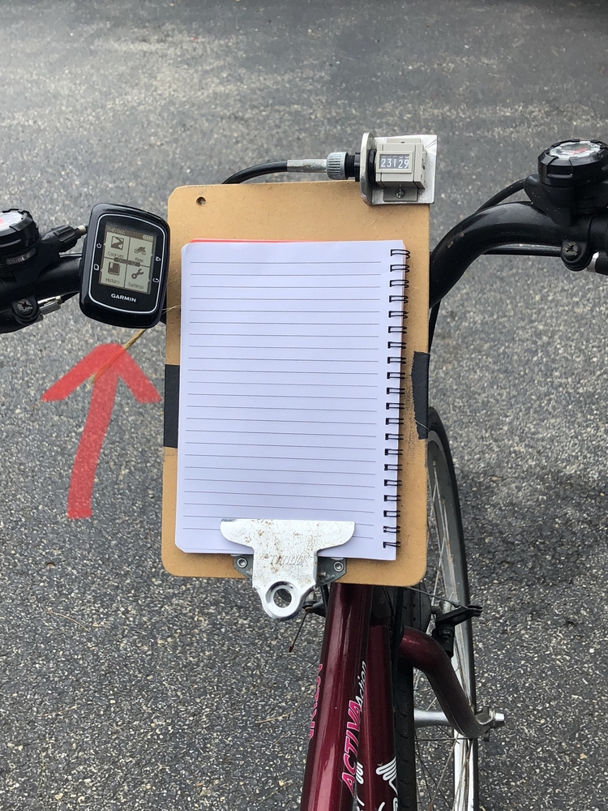
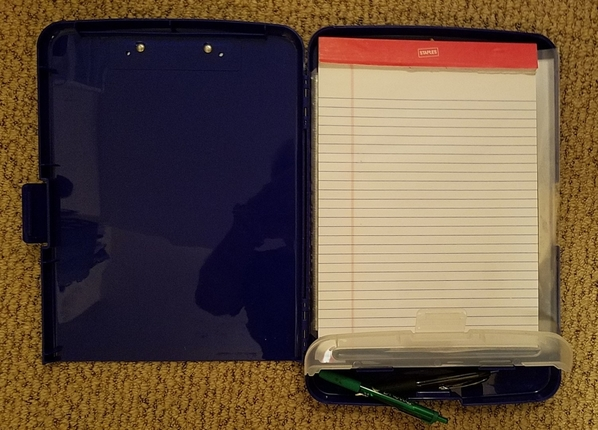
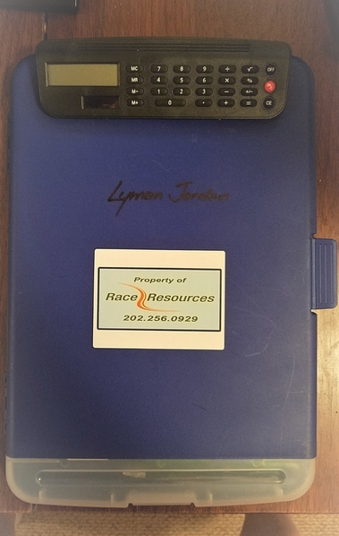

Read-Only Historical Archive — Posting and registration are permanently closed.
On my first measurement job I carried the following in a backpack: paint, open reel tape measure (Keson NR10200E 200'), hammer, few nails and washers, iPad (for taking notes in Draw Map app), and laser measure. I found that I didn't care for the backpack and would rather carry these items on the bike.
What tools do you experienced guys carry and how do you carry them?
Suggestions on brand/model of pannier bag or other bike mounted tool bags?
I use a single rear pannier and usually have
- spare pencils
- small (abut 5 inch diameter) measuring wheel (I usually don't take my 50 m tape)
- hammer
- nails/washers
- paint (I carry spray chalk in the water bottle holder)
- bike tools
- water bottle
The other thing I have that is handy is a small clipboard (from the dollar store) zap strapped to my handlebar with a tube taped to the side as a pencil holder. This holds my waterproof note pad.
Based on 300+ measurements, experience has whittled down the stuff carried while riding to; 4x6 index cards, binder-clipped together, pen and course map go in my shirt pocket. Smart phone and spare pen go in the other shirt pocket. Pocket knife goes in pants pocket. Paint and spray chalk go in the water bottle holders. IPad goes under my belt in back. A flat tire repair kit and pump (used 3 times in 30-yr, but prevents long walks) get strapped to the bike. All the other stuff (steel tape, hammer, nails, washers, and much more) go in a large Cabela's fanny-pack that stays in the truck. We have found that there's almost no need for more stuff on the ride. Most measurements consist of: drive to calibrate, drive to course, measure, drive to calibrate, drive to course for final adjustments and marking. The final part uses most of the tools not carried during measuring and the final adjustments and marking almost never require riding.
If you add each item you could have used to your tool-kit after each measurement, you will soon have a large collection behind the seat of your truck or in your trunk, I know I do. I even have a spare JR Counter, 6-traffic cones, a 1500-ft reel of string and a knee pad, used for establishing a calibration course, along with the fish scale, 300-ft steel tape, 100-ft steel tape, 25-ft steel tape, masking tape, thermometer, Course Measurement Manual and star-drill for marking end points in concrete (I even carry a straw for blowing the dust out of the star-drilled hole before filling it with paint). The list goes on and on. Don't get discouraged; get a big box.
Aside from the handlebar mounted counter (thank you Kevin) which I can’t even put in words how wonderful it is to have it, there is one other tool that I find immensely helpful. It’s the handlebar mounted Garmin. So what I do is set the front tire on the starting line and then I walk back about 15 feet holding the Garmin in the power on but gps off mode. Then I start the Garmin and walk to the bike and re-attach it to its base on the handlebar. Then I start the ride. Now my focus is on the Garmin and not the counter. It tells me when I’m getting close to to the mile marker at which time I gradually slow down and change my focus from the Garmin to the counter until I get to the exact count I’m looking for. It works great and I highly recommend it. 
Where I live in the D.C. area, we have had an all-time record for rainfall this year - over 66 inches and counting, where the average is 43 inches. I have had to measure in some wet weather over the past few months. I found a handy little case for my notepad, draft map, sheet protectors, and pens:

I attached a small metal wire basket to my handlebars, into which I place this case. I hold it in an upright position with a couple of cable ties attached to the basket. I place my draft map in a clear sheet protector and clip it onto the outside of the case. The calculator seems to have worked OK in wet conditions so far. I carry a spare inside the case. This has been a big help.
